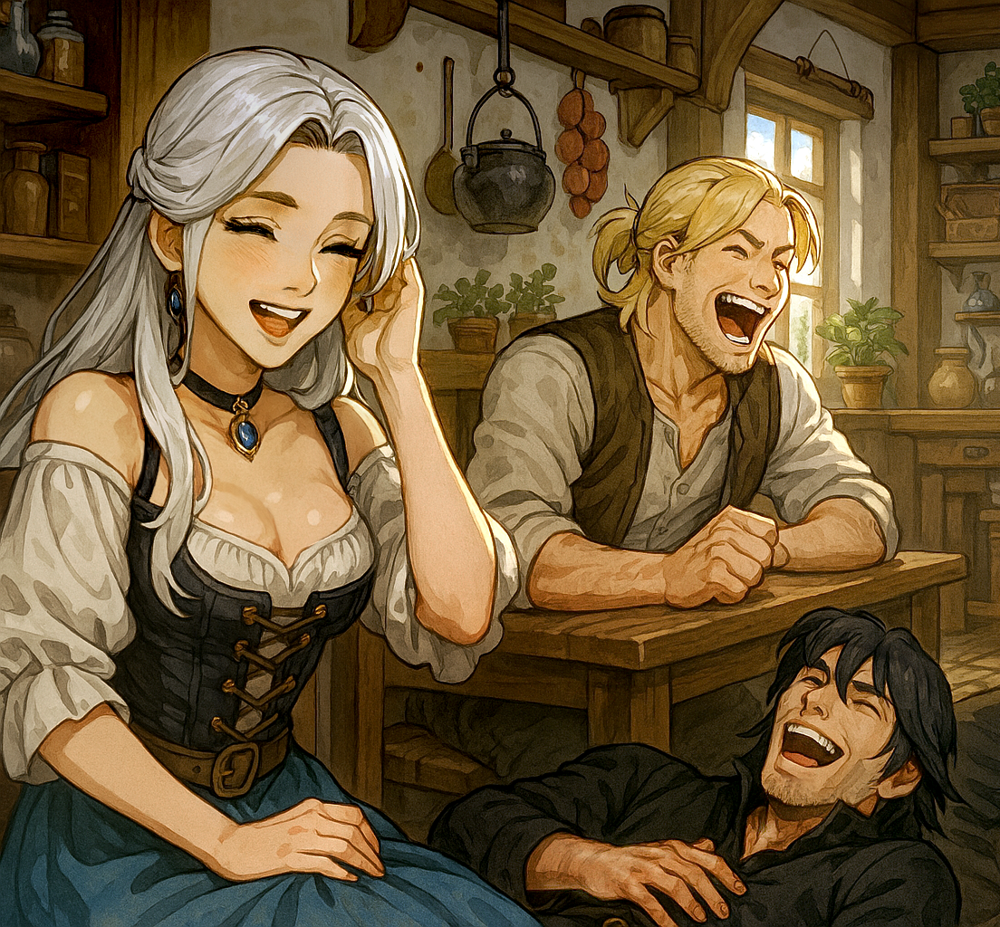
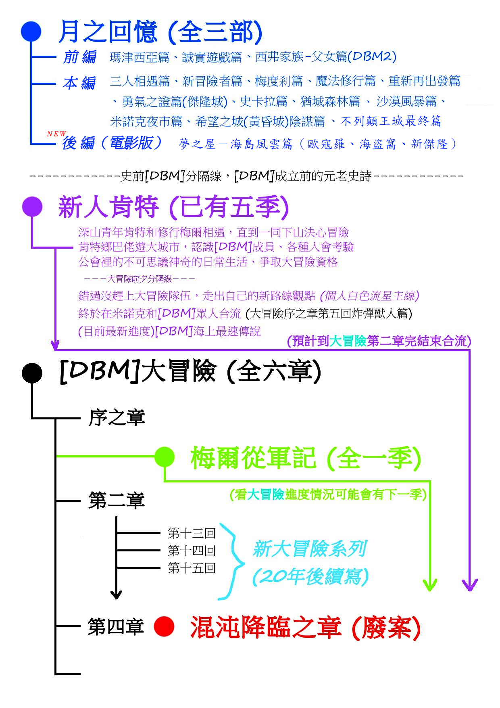
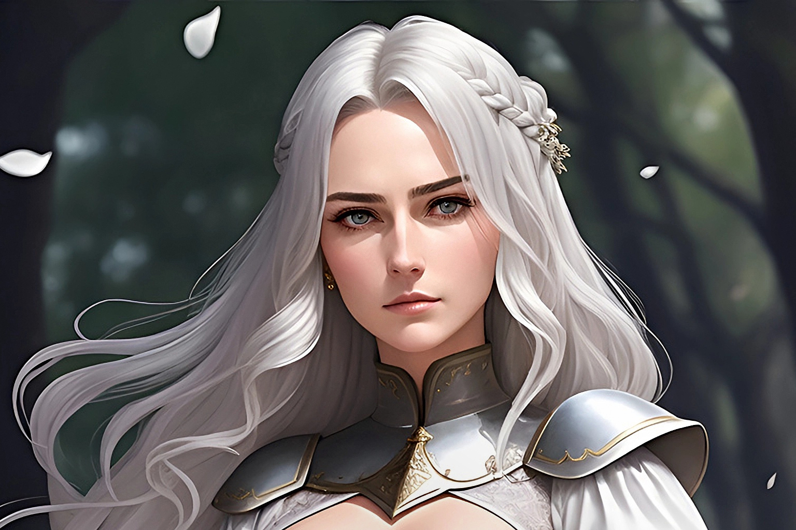

|  |
歡迎來到 [DBM] 公會,進入 Ultima Online 這個冒險的國度.
 成立於 2000 年暑假期間 , UO Formosa Shard .
成立於 2000 年暑假期間 , UO Formosa Shard .
<＜ 6月 6日 , 2025 ＞>
[DBM] Guild Site Finally Returns !!!
６月６日ＤＢＭ！！！
人生有幾個二十四年？ＤＢＭ網站終於正式復活啦－０－
（其實這網站也沒下線多久，也就剛好六年）
不是以往（往下捲動就能看到）那種敷衍甚至沒更新哦
這次是真的要全面邁入下個２５年那種（好啦盡量）
所以本站搬到了Github，也算是強迫自己持續維護
不光如此，網站本身也做了一些新改變，好迎接充滿挑戰的新時代
而最大的重磅消息，當然是，我們的故事又開始推進啦！
每年到了這種時候一定難免會想到ＤＢＭ和難忘的冒險旅程
既然都來了，不能不報告一下這多少年來的重點回顧：（當然不可能是全部）
1. 首先，[DBM]公會 並沒有要回鍋 UO，請放心（啥）
基本上，遊戲中公會早已名存實亡，幾十年來幾乎沒人上線過
大約在十年前也曾數次不定期聖者回歸，但做的事有限，其實是在徹底對故事考古
雖然我個人可能也許有空（很難）會想回去繼續考察，但並沒有認真玩的打算
2. 轉戰 其他遊戲 多年並沒有太多成果，在現實容許範圍我們都嘗試過了
以前我們淡出網創後雖然聚少離多，倒是四處玩了不少，也 RP 了更多、技術層面更好
但除了 WoW（也是千禧年代的事）外真的沒什麼冒險經歷可以說嘴的
（那"DBM"三個正字標記被該遊戲 Boss mod UI 蓋台多年算嗎 XD）
甚至想過搞過把 TTRPG/ForumRP/MMO 結合起來的 DRPG，可惜無疾而終
大家的生活都非常忙碌，交集有限也缺乏動機像以前一樣"年輕"
（好像又在廢話鬼打牆了，這就是人生和世代的不斷循環啊）
3. 在遊戲外 -- 替代網站的網誌／替代即時通訊的臉書社團
除了兩個 DBM World X（Xuite和Pixnet的XP）網誌作為基地之外
其中一個已經掛點成為歷史，另一個還活著(HERE)但萬年已沒維護
十五年來的交流主力都放在臉書Facebook的私人不公開社團頁面上
但使用率也是逐步下降，連通訊錄都算不上，較像暫時儲藏庫而已
我們需要的是一個能安全存放資料之地，而不是演算法至上的過氣平台
加上臉書自己功能不斷的作死，缺乏理想互動，才驚覺該重建老家了？就像一個公會不能沒有公會屋——那個可以稱作"家"的地方
計畫是在去年２０２４就開始構想，甚至更早之前就展開大冒險故事的
重新接續啟動
只是當時對這個陳年網站沒有太多想法就是，古代和現代網站經營上實在代溝有點大
但隨著大冒險的寫作進展，畢竟還是要把新舊故事作出連結，才想起了要處理舊網站
目前打算仍先維持原有懷舊元素，將來是否與更大架構的網站整合或兼併，還是未定之數
總之想法是這個網站依然是以UO內容為限，並加入新故事新章節的各式頁面，和必要調整
後續還會更新[DBM]角色介紹，及少部分的原版大冒險故事文字，使其和新設定更加一致終歸一句，敬請期待！
（有看到新的BGM音樂按鈕了嗎）（這邊與別首不共用）
接下來，就是大家最關心最好奇的新故事創作情報與進度了
4. [DBM] 相關故事創作計劃群２０２５年版全覽 (since 2023)

-- <A> [DBM新大冒險] [文學小說] [進度到第十五回99%完成] --
延續原網站的大冒險正 規故 事作品
還在抱怨以前第二大章沒一個完結嗎？
第四大章餛飩降臨之章說好的ＲＰＧ遊戲呢？（遊戲已廢案取消）
傳說中ＤＢＭ一切的最核心冒險旅程、第五大章伊絲娜大冒險呢？
那些冒險紀錄都到哪去了？（我的腦海裡）
是的，您的願望這次終將達成
二十年前斷尾的故事再度延續，拖稿的惡夢也回來了
這就是，新大冒險系列故事，完全復活，現正(準備)連載中！
再次展開的動機？
當然是熱血未熄，世界局勢的變化
還有AI技術彌補了當初最欠缺的文筆能力不足
也可能是同時間看到了像<葬送的芙莉蓮>作品的影響
因為和ＤＢＭ或ＵＯ的調性相當類似，不以戰鬥及刺激為主軸
冒險事件的展開不是為了要討好第四面牆另一遍的觀眾，而是本身世界觀
再來要說的是創作和發佈計畫方面
眾所皆知(才怪)大冒險系列向來是依照"發佈後即史實(canon)"的政策
大冒險故事的撰寫也都是根據這項最高指導，必須把故事連續性鞏固完全
這問題也導致以前最後加上種種原因中斷寫不下去不了了之....
而且還是在前期充斥各種兄貴熱血、整整袒裎基情十幾回後
各大女角正要登場、大冒險一下子變得多采多姿的時候熄火
然後，就沒然後了......只是想不到二十多年後，就算拜AI所賜，這生產不穩定的原罪還是存在
AI崛起後，我2023年重啟大冒險幾天內神速完成了峰迴路轉的第十三回
首先AI居功厥偉，除各種苦工外更突破了以前想破頭的各種癥結(非專業)
再來當然是追蹤UO-DBM世界觀多年不放棄持續想像的深厚基礎(包含回鍋)
以及個人年紀增長(!)後的見識和文筆的提升(?)
接著下來是胃口更大的第十 四回，薩塔琳娜榮登女主角大 位的重要故事

但是第十五回速度就明顯慢了下來 (其實並沒有，首發就一口氣2.5萬字...)
加上歷史考據和各種IC/OOC未來考量，構成複雜的古今對比雙主線回憶
最難搞的是必須和[DBM]過往所有史實連結，而不是獨立搞自成章節放飛自我
於 是才有了以下各種<B><C><D>衍 生創作企畫的發想(藉口)
簡單說，如果衍生創作(漫畫/輕小說/連載)是副餐， 那(新)大冒險就是滿漢全席
也就是說，大冒險其實是用可改編完整電影 情節的目標來寫作
能力所及盡量地細節描寫，所以用字量相當驚人，甚至是過往加起來的好幾倍
像是最新的第十五回總字數已經到達四萬字，相當硬核不太符現代需求
目 前的"新大冒險"遊記小說進度
十三～十五回都是"完成"狀態，遲早都會放上這個網站(也是重建原因之一)
只是整體策略上未定，放上線公開的時機也懸而未決
目前只有DBM私人臉書上有十三回十四回內部公開，和十五回開場能看而已
十五回後面高潮被我扣住近兩年，就是想等網站先完成重新上線(再找藉口嘛)
不過既然連音樂系統都解決了，或許大家很快就能看到廬山真面目了？
總之如果網站重整順利的話(我也要想想新的大冒險篇章頁面該如何呈現)
十三回～十四回當然會先上，然後才是最完整的十五回，敬請期待 XD
哦 對了，第十五回還不是大冒險第二大章的結尾哦，
先警告
-- <B> [梅爾從軍記(未定)] [視覺小說(理想形式)] [全一季(完成度25%)] --作為新故事系列開端吸引人的嶄新面貌，很可能是剛接觸的入門作品
梅爾從軍記的任務不可謂不重大，畢竟是主角才能享有的待遇嘛
雖然梅爾本身是經典的序之章主敘事者，但他一直不是整體故事主角
這次故事是寫他在序之章後獨自從軍去的經過，不同於大冒險的公會路線
第一次(因為序之章日記也可能是別人在"讀")完全以主角的身分
認真深入描寫他真正心中想法動機的絕佳機會，拓展腳色深度
補完他身為[DBM]三大創始成員之一的重要性，和他們彼此的羈絆
故事結構相較於小說較為單純直接簡短，所以構想上是用漫畫形式
完成度25%是因為只有小說版故事實際內容和大綱
不只目前沒有任何圖像，後續整合工作一定還很多
也是最需要人手加入參與的企劃
但如果沒有的話，大概就是以簡單的單元短篇故事出場
整體上會和大冒險平行發展，最後融為一條線
當然還有最重要的故事主題
雖然要當成一般的(從軍)冒險幻想故事不是不行
但我希望能有更深的涵意 (雖然已經很深了，甚至還作了詩歌-0-)
劇透的部分就不說了(非公開臉書留言裡仔細找)，有各式公會或官方人物登場
-- <C> [月之回憶] [隨機連載小說] [全三部(進度90%)] --補完性質的前傳 (講難聽普通一點就是這樣-0-)
但同時也是史詩般(X)敘事詩(O)般的漫長旅程
主要是講述創會主角三元老的既菜也不怎麼傳奇的傳說往事
把三人相遇到創立公會從頭到尾的過程都具體寫下(但還是有留白就是)
其實我是從大冒險第十五回"初步完工"後才動筆的
也就是說月之回憶和第十五回的"雕琢打磨"基本上是同步進行
公會成立前歷史中未設定明確的東西太多了(即便漫長的二十年內都在腦補)
有必要整個完整回顧一次，訂下基礎設定
這部分真要說可能甚至會比大冒險還長還囉嗦
因為光草稿量全部章節加起來應該超過百萬字級了(!)
長話短說，把秘密和驚喜都留給以後，只簡單介紹一下：比起其它衍生創作企畫會有更為完整深刻的故事和(背景、人物)設定
作為大前傳大致上文風和大冒險相仿，只是更加"平淡化"、"(歷史)寫真化"
重點是會將未來大冒險提到的過往事蹟或伏筆說清楚講明白
讓好奇的讀者見識到那些角色到底如何一步步走過來的
值得注意的還有一點
就是比起大冒險和ＤＢＭ一貫的光明正向王道
月之回憶有點不同，其實暗藏著濃郁但隱晦的黑暗風格(所以 尺度稍大)
畢竟，這系列要表達的也包括了UO本身前期的"黑暗時代"特色
我想要完整呈現當年MMORPG的"曾經輝煌"該是甚麼樣的RP光景
前編－只集中在薩塔琳娜和CV家的故事（因為只有我知道，可以先寫）
本編－三人相聚後，真實冒險生涯和各種形形色色旅途（想像成<芙莉蓮>）
後編－衍生作，不完全算是後日談，可完整獨立為[DBM]公會成立前夕的插曲
目前進度 (注意是"進度"，不是"完成度")：夢之屋－海島風雲篇的最終決戰
我可能會擱置等待到真的進行連載到那個最後階段時再來補完劇情
因為那段牽扯到的影響太大了，不只有[DBM]故事主要反派謝幕(史實沒死)
還有貫穿全部主線的要素必須先釐清和確認，確保大冒險不會吃書
為了不影響別的衍生創作企畫和廣泛的劇情走向
先放著留給以後再畫上句點
-- <D> [新人肯特] [短篇連載輕小說] [規劃進度99%] --
以肯特(Kand)這名在大冒險序之章前就登場的公會新人作為主角
用他的新鮮觀點重新描寫大冒險序之章前後的完整另一面故事
其實也就是，用新的故事和新寫法來重啟序之章那個時代、[DBM]公會的故事
這樣做的用意有三個：
一、是承接梅爾從軍記的情節導向動能，觀眾可能會想知道什麼是ＤＢＭ大冒險
對[DBM]公會或UO的世界觀產生興趣(新人肯特中會有關於公會的實際運作細節)
身為入坑向輕量級作品，有必要把故事設計成比<A><C>更容易吸收
二、 是讓更多未來角色(在背後)登場，增加[DBM]大冒險的深度
以肯特作為中心點，完整呈現序之章所沒說到，[DBM]大冒險的真正全貌
三、是文化保存(你沒看錯)
因為序之章應視為二十年前經典，可以的話我不想改動內容(除非必要)
而新人肯特就是重溫那美好時光的最佳方式
和Mel的序之章是一體兩面的互補關係
和月之回憶一樣，除了文體(引誘人讀下去的輕小說寫法)差異外
新人肯特也有自己的文風特色，那就是獨特的黑色幽默
大家本來熟悉的[DBM]公會角色，在這部當中都會有或多或少的(合理)反轉
更加體現或暴露出公會裡各個成員不為人知的另一面
強調出[DBM]公會與眾不同的獨特存在意義最後是故事的當前進度
說"規劃進度"而不是"進度"是因為目前規劃的範圍就是到某人領便當(合流)
以肯特的觀點再寫下去也只是大冒險同樣的內容換個視角再講一次而已
換句話說創意成分急遽下降，要不要繼續寫下去要等到釋出收到反響後再打算
以上，就是所有不含圖像的文字故事內容進度報告
當然要正式上線或在網站上完整呈現又是之後要努力的工作了
總之，既然這麼久沒更新過，沒理由更新文長度會比上次還短吧－０－
全部關於 ＤＢＭ（沒有括號）的回歸概況，感謝你看完，以後也多多指教！
<＜ 6月 6日 , 2004 ＞>
[DBM] coming back !!
6 月 6 日更新日 !每 年到了這個時候總是要更新一下身心才會舒暢 -0-
廢 話不多說 , 總之是懶+催化效應的緣故
首 先報告一下這半年來我們做了哪些事：
1. 年初的倒屋潮我們終於建立了完整的[DBM]住宅區
D' 也將公會屋移到 了這邊 (見首頁圖 , 蓋的不錯-0-)
(好景不常-0- 因為沒啥人玩 , 到現在應該倒大半了吧)
2. [DBM] 會員大會(1/15) , 主要議題是討論[DBM]的未來
(長達三小時的會議當然包含所有[DBM]以往的傳統-0-)
完整的會議記錄在暑假比較有空閒時會找空間放上來議 題包括：
[DBM 未來去向篇]
如果 UO 真的倒了怎麼辦 ?
可能轉戰的目標 ?
UO 外是否還用"DBM" ?[公 會改革篇]
下一屆會長 (in-game) 人選 ?
如果會員打散了要如何維持關係 ?
DBM 層次從 UO 的公會提升至現實社團 ?[UO 篇]
UO 還能活多久 ?
UO 的希望在哪 ?
DBM 在 UO 打算 ?[RP 篇]
如果轉戰那人物設定要原班人馬延續還是重頭再來 ?
轉戰遊戲後的 RP 玩法要怎麼走 ?[Bonus]
下屆 in-game 會長當場票選 -0-
3. [DBM]全名改稱提名票選 ( "死神血染月"=> ? )
由於之前開會已決定[DBM]提升至現實社團
所以做出改變全名的票選活動 (縮寫仍同DBM)最 後結果是：[ Dream of Blurred Memory ]
(贊 成8票 , 反對0票)
句 面翻譯的話可以是一語雙關兩種解讀
各字眼也有其代表的[DBM]特質意義
整體而言更可表現出[DBM]的過去展望與未來
詳細的全名內涵解析說明也一樣稍後有空再上傳
4. [DBM]相關創作計劃群 (有多項不同分支)-- <A> [本傳] [DBM大冒險遊記] [網頁] --
好久一陣又沒動了 , 理由是我靈感卡死
照此速度下去可能到 30 歲以後才有可能獨力寫完 -_-
最近正在醞釀新的遊記產生方法 (多人合作)
如果順利的話生產速度會提升好幾倍吧 , 敬請期待 XD-- <B> [外傳] [DBM II(副標未定)] [自製遊戲/RPG2K3] by mel --
即是 mel 的 DBM 外傳 RPG 第二部 (第一部在8/14/2003的更新裡有)
比起第一部的處女作將會有更為完整深刻的故事和設定
目前進度：已完成第一章故事的小說版 (一樣擇日上傳XD)-- <C> [本傳] [名稱未定] [魔獸三的自製遊戲] by cv --
照理說除了網頁上的遊 記外都應該是外傳性質
但是本作的時空是架在網頁大冒險結束後的 Malas 大陸
為了徹底把本傳的故事和人物結局做一完美收尾
(因為不太可能冀望在 UO 上了....)
所以決定採取自製遊戲的自由度發揮來表現
(每人玩的過程和結果也不同 , 一切都決定在玩者手上)如 果要我說簡單的幾句話闡明我的心聲 , 那就是：
在 UO 裡 , 嘔噎死哀(OSI) 是神
要玩家往東沒人敢往西(不然準備say goodbye) , 君要臣死 , 臣不得不死
他這樣亂搞 , 就算我們再怎麼能屈能伸 , 終究還是要困死在框框裡
但在這裡....玩家 自製遊戲....我們才是神！！！進 度方面算是進展頗多 , 製作時數兩人加起來應該有破百吧
最近由於現實因素所以暫時休工 , 等待重點的暑假來臨
至於版權問題 , 倒是不必擔心 , 將會有完整配套措施PS： 原本 B 和 C 是獨立分開各由兩人分別製作的
後來我和 mel 溝通討論後決定合作交流增進效率和互補
目前計劃是先合力完成 C 第一章內容 (今年暑假為重點)
然後看現實情況決定下一步 , 最終是合作把 B C 都完成-- <C'> [外傳] [魔獸三的自製遊戲] --
其實是製作 C 期間所產生的實驗性邊際產物
有 mel 的"DBM魔獸版預告片" 和"Kand白色流星傳說"
還有我的"DBM魔獸版英雄測試RPG篇" 與"實測對戰篇"
完成度還算可以接受 , 一樣改日有機會在放 (別打我XD)-- <D> [外傳] [DBM夢想的代價] [小說] by xxdeath --
death 的外傳小說 , 改編自之前曾在 UO 中流傳的書本"天使之淚"
( 不要懷疑 , 作者就是他本人 , 連我們會內都有人搞錯 -.- )
以原本的"瑪奈兒之墓"作為第一章之前的前言的話
目前已連載到第三章哩 , 此外還有四張角色畫像設定及封面
同樣最近會擇期另闢專區上傳 XD (咬我啊 Q_Q)-- <E> [外傳] [DBM傭兵團] [漫畫] by kand --
目前沒有進度.... 只有一張人物草稿(V)....
5. 歡送 D 當兵晚會 + 真人大冒險日本行會議
終於......寫到最後一項哩......好累 -_-
其實這次集會討論出來的重點不是很明確
主要還是搞笑歡送 [DBM] 長久的支柱 D 去當兵
加上我也還沒整理記錄......orz
以上 , 便是 [DBM] 的近況 , 感謝你還在注意本網站動向 -0-
<＜ 12月 27日 , 2003 ＞>
期待已久的大冒 險前奏曲終於完整上線 !!
這次版主有真的更新喔 -0-(台 下一片噓聲-_-)
千呼萬喚始出來 (有嗎-.-?) 的這篇最重要的前奏曲之 前一直放著沒能釋出是因為一些嚴重劇情 bug 待處理
很 幸運的這幾天我重新檢視這部份終於發現問題所在
返 璞歸真把當初的準備經過 (包括現實心情) 全寫進去
將 mel 最早寫的那篇移到外傳部份
death 那篇移到序章開頭
終 於得以發揮所有靈感寫成整篇完全的準備故事
連 所有之前難以交待的開頭問題也一併解決
該 說的都濃縮在這篇有點長度的前奏曲中
才 滿足本人龜毛主義者的需求 A_A
各篇最底下也新增了 "幕後秘辛" 這個小單元(其 實很早前介面就弄好了....只是沒放上來....)
收 錄一些這篇大冒險遊記產生的過程
或 值得一書的地方 (例如音樂選用 , 文章內藏的含意等等)
前 身可以參考 "史話" => "公會前傳" 中最底下的說明文
就 類似那樣講解一些不為人知的秘辛
重 點是....還沒開放 -0-||| (<=找死=_=)
最後 , 大冒險遊記所在的單元終 於得以正名為"冒險" ^_^
「冒險」新增 :
[DBM]大冒險 - 前奏曲 準備
前奏曲 --- 蠢 蠢欲動 by Chicov
<＜ 10月 27日 , 2003 ＞>
雜談與計劃
好久沒更新了........-o-( 二話不說就被眾人圍毆後丟到競技場中關門放狗 )
[DBM] 本季 UO 中並無大事遊 戲中公會幾乎停擺了 , 有的話也只有個別活動而已
新 的 AoS 大冒險計劃推行失敗
反 省原因歸納起來具客觀條件者有三：
1. 大環境不再 , 失去冒險需求意願和舞台 (Malas或許不適合)
2. 團員受現實條件影響分崩離析難以凝聚 (可或不可抗力)
3. 新大冒險門檻太高 , 團員能力和注意力尚缺準備 (包括我)
即 使阿福當時回溯當機頻繁 , OOC 大魔王肆虐
不 過這些在之前的計劃中業已克服
( 這還不簡單 , Malas 可是"時空破碎的大陸" -0- )
劇 情背景也都佈好 , 同時亦跳脫了之前大冒險既定的包袱
可 惜差了臨門一腳以失敗作終 (如上述三原因)
重新出發的失敗固然令人沮喪但 總是下狠心把舊大冒險劇情給作了個了結
還 算是沒進展中的小進展
不 足的部份就留給想像力去補綴吧
不過 , 在遊戲外本公會還是維持一定的活動力根 據目前混沌不明的現狀
如 果沒有出乎意料的發展或轉機 , 我把計劃暫定為
以 教育傳承我們長久以來的寶貴經驗和知識為要旨
近 期應該會陸續公開許多深藏在會內的資料
雖 然說阿福還不能說是絕望到日薄西山那種地步
但 是此時才認真計劃教育傳承工作還真是有點晚了
不 過我們會更加強迫自己去做的
即 使精神原本就是不滅的何時做都沒差 -0-
( 眾人：還想偷懶 -0- 給我打 -0- )
<＜ 8月 14日 , 2003 ＞>
網站小更新 !!!
好久沒更新了 -o-(眾 人：又是這句話)
由於阿福近日狀況欠佳Publish 19 的姍姍來遲
會 員們的現實因素
暑 假我們新的大冒險一直無法進行
遊 戲內沒有什麼特別的進展
不過雖然玩 UO 的時間少了我 們仍然一直持續在活動：
從 一開始惡名昭彰的"黑刺王討伐戰"
我 們亦在場冒著生命危險取得第一手情報
然 後在阿福岌岌可危時
靠 Vagabond 不斷的和 OSI 場外進行談判作戰
終 於爭取到 官方的正式回應
(找 7月28日的文章或搜尋標題"Formosa玩家請願官方回應")
現 在阿福壞掉的主機終於換了 , 玩家權益得以申張
再來是 [DBM] 第一次暑期網聚成功落幕有 death , mel , kand , peeka , 和我共五人
不 過第一次沒啥特別的 , 吃飯聊天泡網咖 -0-
最後放上一堆有的沒有的連結包 括 Mel 力作 [DBM] 外傳 RPG - 勇者之路
(感 謝死神上傳-0-)
kand 和 death 參加 EATW 的桌布比賽
至於這次更新最主要的網站內容....自己看看吧....@0@
「遊記」新增 :
[DBM]大冒險 - 第二章 第十二回
<＜ 6月 6日 , 2003 ＞>
[DBM] 大冒險暑假預定 !!!
好久沒更新了 -o-原 因就不必多說了 ([DBM]的網頁版工是出名的懶)
為 何選在 6 月 6 日斷腸時更新呢
這 是有典故滴....
話 說老頭每年到這時候吃壞肚子都會特別痛....
(觀 眾別再丟老頭雞蛋啦-_-)
懶得更新的原因很多其 中一個就是完美主義作祟 (眾人 : 你要提幾次)
很 多東西原本是可放到網頁上給大家看的
不 過沒弄好我不太想放 -_-....(怪人-o-)
這段時間 [DBM] 公會並沒有停止運作從 FPG 的袋內佈置比賽開始
DOOM 的巡禮 , 夜市的復興
我 們經歷了染上死神 SARS 狂趴的阿福苦難期
還 有數不清的出團活動
最 近還有 BBC 最佳不列顛尼亞公民活動和端午節
AoS 後說不閒也可以很閒 , 說閒又忙得不可開交轉 眼暑假又要來臨了
大 家也差不多適應 AoS 的改變了
該 是回歸正途的時候哩
總之一年一度的完全(連續)大冒險又即將來臨請 各位會員可以開始準備了(尤其是新人)
DBM!!!
<＜ 3月 30日 , 2003 ＞>
[DBM] 公會屋落成餐會實況報導
Malas 公會屋落成餐會在 3/29 當日晚上 9：30 左右正式展開
( PS : Malas 沒白天黑夜之分 , 只有午夜時分瞬間完全黑暗 )
我們由公關 death 邀請了數個友好公會為主的來賓一 同來敝公會屋共襄盛舉
由於廚師遲到所以延了半小時才開放進入整 群人剛來還誤以為是獸人請的客 @_@
( 這是為了掩人耳目以躲避 [DBM] 死對頭獸人一族的騷擾 -0- )
一 開始簽到時就排隊搶筆搶書亂成一團....
首 先是會長 D' 的致詞......
等 大家都坐下後 , D' 歡迎感謝所有來賓的參加
然 後要所有人注意本餐會最重要的會長致詞演講
在 大家安靜下來全神貫注準備要聽 D' 的致詞
D'：" 致詞完畢.... 因為我根本沒準備任何致詞 -_-: "
( 真是夠哩！......................-0-||| )
上菜大任是由我們 [DBM] 最像女侍的 Palseut 來擔綱所 有人不停的狼吞虎嚥 , 大吃大喝
生 怕如果吃得太慢食物就會被搶光了
不 料他們都算錯哩 -0-
只 見 Pal 菜愈端愈多 , 眾人吃的速度馬上被上菜速度狂壓過去
沒 一會兒所有人都開始消化不良 -0-
既然大家都吃不下了 , 也有人喊渴於 是便開始把整桶的冷藏的好酒拿出來歡飲
餐會當然不是只有吃東西 , 於是有人提議會長唱歌老 頭聽到馬上把台上的 D' 推開自告奮勇獻唱
一 旁聰明的 V 見狀臉部開始扭曲 , 連忙逃出公會屋 -0-
接 下來眾人活活接下老頭"船歌"的魔音傳腦
加 上酒也喝得差不多爛醉了
部 份人開始聞頭(老頭-0-)起舞開始暴動 -_-|||
有 人醉到跟著跳起搖頭舞
有 人更絕以為自己是警察來取締 -.-
然 後更有 lich , 北極熊 , 惡魔來狂歡
還 有胖食人魔和雙頭巨人打架搶食物
連 外面的水晶元素也來湊熱鬧 -0-
老 頭則趁亂偷吃別人豆腐 (連男的也摸=_=)
一 時場面亂七八糟
可 能邪惡之氣太過強大導致觸發了神怒
甚 至一度還打通了與各種怪物棲息地相連的月門
( 如 Destard 的龍......Hythloth 的小黑......蛇人堡蛇人......-.-|| )
差 點一堆人葬身在想分一杯羹的怪物群中 -_-
老 頭從被黑惡魔痛毆的惡夢中醒來之後
宴 會已曲歡人散 , 剩下醉倒的人和狼藉的餐桌
不 過不久 [DBM] 核心會員們也都清醒回來到齊了
於 是會員們與剩下的賓客就到三樓的精緻酒吧
坐 下來邊喝茶喝酒聊天打屁
沒想到老頭一樣是無視酒精中毒的危險狂喝烈酒突 然一陣慘叫 , 接著意識不清的呻吟
原 來老頭的解酒液用完哩...... ( 難怪這麼能喝 , 簡直非人哉 -0- )
噗 咚一聲老頭終於再起不能 -0-
就 在這個時候 , Saterina 偕同久違的 Mel 回到了新公會屋！
Mel 終於要退伍了！！
XXdeath , Mel , Saterina , D' , V-Devil , Palsuet三 元老全到 , 三任會長也全到！
這 是 [DBM] 公會難得重逢的一刻
畫 面將會永遠在眾人的心中 ^_^
感 謝所有參與來賓：
( 人太多記不完只能看簽到簿 @_@ , 有遺漏的請轉告我 )
Alain
PIG [X-I]
[X-I] 會長 月影 Jerry
Blue [X-I]
LOVE 阿祥 [X-I]
SLF 會長 Delete
MAYA
CAREF
[^^V] 會長 NeonBaby
Phoe = Morning Star
<＜ 3月 28日 , 2003 ＞>
[DBM] 公會屋落成餐會
在 Malas 的公會屋大致完工將 在本週六晚上九點舉行落成餐會
歡 迎有興趣的各位朋友一起來參加
當 作請客來坐坐聊聊天 ^^
在 [DBM] 公會時間線上而言是 在目前大冒險進度的好幾回後
在 大冒險進行到 Malas 大陸出現後
劇 情才會銜接過來
<＜ 3月 12日 , 2003 ＞>
公會改革預定 !!!
公會新管理制度草案決定大 冒險活動也會有所變革
然 後討論區決定和聊天區分離
子 公會 DBN 部份還在籌畫中
等 完成開放 [DBM] 遊戲方式透明化後
近 期就要開始徵收新人
讓我們一起把角色扮演精神推向下一個高峰 !!
<＜ 2月 28日 , 2003 ＞>
AoS 角色扮演面面觀
因為 UO：AoS 的終於上市本 人忙著適應新系統和房屋事宜
又 逢開學事忙 , 玩的時間有限 ( ?-.- )
所 以拖了這麼久才更新....
( 路人 : 懶就別找藉口!! )
總 之這幾週來發生的事不算少
找 機會 (才怪....) 再把其中比較有趣的拿來分享
閒 話不說了 , 直接進入主題
AoS 的出現對原本的角色扮演環境造成哪些影響呢？
角 色扮演的獨特性：( Excellent !! )
新物品和新戰鬥系統讓角色技能更趨向多元化打 亂長久以來穩固的牌局
讓 玩家更難為了"強"而一窩蜂走相同的既定路線
活 化多變性的想像世界人物
例如屬性不再加成技能表面值一 些技能都變得更加專業化
像 紮營烤肉這些 , 現在沒練的話可是做不來的
戰鬥的話 , 各大職別的定位更為重要抵 禦 , 傷害 , 輔助等角色都較以前鮮明
很 難再出現以往"王道型"的角色
每 一種角色都勢必有某方面的缺陷
不同的武器特攻讓每個戰士的打法更為獨特不 同的魔法系統讓每個施術者擁有更大的不可替代性
不 同的裝備組合讓每個角色的特性更加突顯
至於新舊之間的平衡性還有待時間來驗證兩 種新技能職業都相當有用且強勢(?)
相 信以後路上會多出不少趕風潮的角色
角 色扮演的自由性：( Poor... )
基本上自由和獨特常是併為一談的不 過這邊強調的是玩法上的自由
也 就是角色扮演較不受 遊戲機制 影響的程度
AoS 多變的物品屬性和新戰鬥系統表 面上是增加了使用裝備的彈性
事 實上卻是限制了角色扮演的自由
舉個例 , 現在穿甲不扣 dex , 看起來選擇好像變多了其 實不然
限 制條件反而變相成了必須撐高 STR 才能穿重甲
練 Focus 技能才能穿皮甲以外的護甲
如 果再加上抗性問題 , 將會頭痛許多
好 防具也愈來愈難取得
以 前穿個爛甲就能勇闖天下的傳說不再
現 在由於戰鬥難度的提升
裝 備必須要更加斤斤計較
選 擇雖多了 , 但相對的卻被遊戲機制箝制了
好吧 , 就算你可以不管它照 樣穿著你想要角色穿著的裝備
但 是戰鬥是冒險中不可避免的重要環節
每 次遇上戰鬥你將會到處碰釘子
技 術差點的就當場死給它看
想 裝清高？這樣可是行不通的
除 了一死再死 , 你還如何能夠悠閒的進行角色扮演？
這是很難克服的一點不 過我相信經過訓練和學習研究後
再 加上有這方面分析能力的人幫助
應 該勉強可以過關
可 是自由度仍然是無法和以往相比的....
角 色扮演的互動性：( Good ! )
前面提過角色技能搭配會更加多變相 對的各種戰鬥角色的優缺點也愈明顯
戰 鬥難度的提升和系統的轉變
讓 角色互補和各司其職的重要性遽增
同 時也促進了社會互動及組隊行動的需求
生產系這次也獲得強大的影響力以 往工匠充其量只能當個背後的無名英雄
難 聽一點......只能算是個"工具"......
要 說到更有深度的角色扮演
可 以說很難沾上一點邊
而 現在 , 生產系終於出頭天了(至少部份)
(也 就是說你或許可以完全不用玩戰鬥角色了)
(有 經營買賣 , 有訂單 , 有裝備需求 , 有自訂屋 , 錢又難賺)
戰 鬥角色想要躋身傳說英雄之列
必 定要先臣服於出色的工匠腳下 XD
雖然如此我 相信很多老玩家都會有自己的工匠任由使喚
大 家也早就養成自給自足不假外人他手的(好?)習慣
或 許 AoS 帶來的影響不會像我以上說的那樣誇張
不 過有總比沒有好
工 匠現在總算是獨當一面的角色了
以 上就是我對 AoS 的初步角色扮演分析
有 機會下次再會 －O－
<＜ 2月 9日 , 2003 ＞>
慶祝 UO 邁入下一個世代
UO：AoS 就要上市發售了[DBM] 全體向各位拜個晚年
獻 上大冒險第十一回的故事
( 下一回 ? 再來就都是我的個人秀哩 , 哇哈哈哈哈 @0@ )
「遊記」新增 :
[DBM]大冒險 - 第二章 第十一回
<＜ 2月 7日 , 2003 ＞>
Malas 大陸概論
Malas 是永生寶石碎片上最 特別也是最黑暗的一面
受 到不明力量影響已開始向四方分裂
Malas 不是完整的大陸 , 而是破碎的島群漂 浮在星海虛空之上
主 要分成三大部份：
北邊和南邊之間由 divide of the abyss 這個深淵所分隔南 北各有個主要城市： Luna(月) 和 Umbra(影)
分 別代表光和闇 , 聖騎士之城和死靈法師之城
( 看城市外型就知 , 我認為還有秩序 vs 混沌 -0- )
至於連接這南北兩半部的第三部份 (地圖左下)已 經開始破碎崩解
各 小島都只以橋樑來相連
( 另外地標當然還有我的最愛 --- 即將登場的 DOOM 啦 -0-!!! )
據有限的情報看來該 地的人類住民是來自 Britannia 的
經 由一個叫 Gatewater 的通道來到 Malas
( Gatewater 就是地圖下方那個 Gravewater Lake ? )
其 實就是一個海上的漩渦(whirlpool)
因 此這邊每一位住民都知道 Gatewater 的事情
幾 世紀以來 , 他們也尚未找到回去的路
其他的不說了 , 想看自己去看
Dawn 現身與 Blackthron之死 by Palsuet
在上午 8:00 參加了 , 直到 8:20 結束都 是一些老土說話 , 說什麼保衛了家園 , 打退敵人之類
最 重要的是 ----> 她說 Lord Blackthron 死了
這是做什麼的!!! 根本就表明了 LBR 的劇情就此完結LBR 果然是騙錢
還有 OSI 也不安好心 , 本想說居然會辦活動卻 是為了讓 LBR 草草完結
重要公會事項討 論
既然 OSI 已決定讓 Lord Blackthorn 赴死那 我們也不能讓我們的敵人這麼草率陣亡
看 來該是大型活動的時候了......
(請 會員至討論區討論)
<＜ 1月 29日 , 2003 ＞>
寒假大冒險活動預定 !!!
時間訂在過完年的下一週週末晚上 (二月7~9日)將 延續(或另開分支路線)上次的大冒險劇情
請 各位開始進行準備了
D' , Saterina , peekawar , Palsuet , (V-Devil)除 了以上角色之外
其 他的都要想出登場劇情
前情摘要：DBM 一行人藉由哈文鎮長 Uzeraan 的協助離開了 Haven
在 Vesper 順利完成了黃金色藥水的製造
而 下一個書本上的謎題
又 將帶領他們去哪裡尋找下一種生命之藥呢？
本週活動公告 by death
DBM 的同胞們我們將參加 SLF 的"探險活動"這 次活動詳細內容如下
３－４人一組
規 定要取得幾樣關鍵性道具(怪物身上的)
不 能 RECALL , GATE
從 公會屋出發後 , 先完成任務回來的得勝
時 間定在這個星期四 ２２：００
請 各位參加的會員提前１５分鐘到達 SLF 公會屋檢查身體
規 則!! 每人只能限用戰士
身 上不能帶任何物品符石書也不能帶(除了防具和盾)
到 時會有箱子給你放符石書(盡量放自己家裡)
SLF 會自行分發所需的物品
如 武器 , 藥水 , 繃帶 , 藥材 , 有可能會用到的物品
意 思就是說全身只要帶防具來就好啦
現 在已經有新人 UENO(非本工會) , CV , PK , DEATH 參加
請 要參加者於星期四晚上９：４０到 DBM 公會屋集合 ^^
( death 你寫得亂七八糟 , 錯字也一堆 -0- 幫你重整一次了 -0- )
重要公會事項討 論
請到秘密討論區討論關 於新人招募的方案解 決公會後繼無人 vs 公會素質的問題
<＜ 1月 19日 , 2003 ＞>
Mel 的漫畫
Mel 的大作畫完哩加 上先前的兩頁共四頁
真 是惡搞的經典啊
( 好像不是惡搞 , 是寫實 -0- )
一樣有小更新一 樣都是不容易發現的小地方
請 自行尋找 -0-
「史話」新增 :
<＜ 1月 8日 , 2003 ＞>
大更新計劃中的小更新(三)
這次的小更新比較少都 是些不起眼的小地方而已
比 較大的都還沒完成 -_-
另外......也才是重點！第 十回終於完成啦 ^O^
「遊記」新增 :
[DBM]大冒險 - 第二章 第十回
<＜ 1月 1日 , 2003 ＞>
大更新計劃中的小更新(二) & 公會石意外
網頁音樂撥放方式已改變取 消自動撥放改成手動撥放
撥 放方式是點一下各頁面的 "Start BGM"
停 止方式是左邊目錄下的 "Stop BGM"
目 前首頁是暫定不自動撥放
成員名單頁面也有更新主 要增加圖片和角色扮演程度評估
不 過尚未百分之百完成
重要 !!!
某人耍白爛把公會石會員全刪哩 -.-請 各位到公會石重新加入
白 天找 D 加入 , 晚上則找 death
<＜ 12月 14日 , 2002 ＞>
大更新計劃中的小更新 & 公會活動領導代班
目前我正在全力建設角色扮演專區中其 他部份的話
一 篇大冒險遊記我資料搜集和草稿都弄好了
這 幾天我也會盡快完成放上線
一 些網頁圖片部份我也正在處理中
什 麼時候會上線我就不保證了
不過天天還得陪各位出團我 還真是有點吃不消啊
加 上 D 現在時間也不是很能配合
所 以活動召集人就交給 death 和 vag 了
我的計劃是在這個月完成角色扮演專區但 我的習慣是這邊做做再換那邊做做
所 以每一邊的完成度都不夠
不 到滿意我是不會上傳的....
大冒險遊記方面....也不得一直暫緩了我 將撥出大量時間來弄[DBM]的東西
如 果支持我請多多分勞別讓我操煩 -_-
因此今天就先把一小部份先放上來....
「相關連結」大幅更新 :請點選左方目 錄區
<＜ 12月 8日 , 2002 ＞>
被遺忘的 Blue
大冒險第六回本來登場客串人物除了 JAZZ 外還 有另一個冒險者叫 Blue
之 前我一直想不起來到底叫什麼名字
現 在終於想起來了-_-
就是我們五人一路從 Britain 經下水道殺到 Papua 的Blue 有學魔法 , 幫忙隊伍解毒的貢獻無可比擬
特 別是沼澤地裡暗藏大量有毒的巨蛇
對 當時新手的我們實在非常難以應付
第六回的開頭省略掉的那段旅程可 是我印象中相當深刻的一場冒險哦
有 機會我會把這段故事寫出來的 ^^ (可能會在大冒險故事中)
啥？ 你問我那條古代魔龍哪來的？因 為我們剛到 Papua 門口就遇到 UO 生涯的第一條龍 @@
( 打到一半被警衛 Ruby 劈掉哩 -_-")
「遊記」修改 :[DBM]大冒險 - 序之章 第六回
<＜ 11月 27日 , 2002 ＞>
網站終於更新 -o-
由於暑假過後所有人都愈來愈忙了(慢慢長大了....)連 常駐程式 D 都變成只能白天玩了(大夜班)
所 以本公會停止運作將近三個月
最 近 death 受傷休學
終 於可以再次回到 [DBM]
因 此我認為休息夠了打算再出發
除 了當兵的 考試的 工作的人外
其 他人都給我回來吧 -0- (好像也剩沒幾個@o@)
第一件事是更新遊記(death現在超閒)有 能力有興趣或想嘗試的過來幫忙吧 -0-
秘 密討論區的話我近期就會弄好
掛 掉太久了.... 死 pchome -_-.....
最後還放上了 Mel 放假抽空所畫的漫畫希 望大家多多支持
「史話」新增 :
<＜ 10月 20日 , 2002 ＞>
網站更新和公會石重整
經過我和 D 討論後 , 決定公會成員重整只 有參與角色扮演的角色才會繼續留在公會名單上
所 以現在公會石不會看到任何生面孔了
一 律和網站上的名單無二致
此外暑期完全連續大冒險暫告一段落之 後將回復以往公告後才進行的形式
新成員加入
Dark CIA (CIA) 大冒險第五章前就加入了只 是沒更新忘了公告出來 @@
CIA 在現實世界是 Alu 的弟弟
是 第一次接觸角色扮演 , 請大家多多解囊傳授
<＜ 8月 8日 , 2002 ＞>
[DBM] 網站改版 !!大冒險第五章結 束 !!
先向各位支持本網站的朋友說聲抱歉本 站已近兩個月沒有更新
最 大原因當然是劣者我實在太懶
二 則是本公會在暗中進行 Ilshenar 的大冒險
留 言板也關閉許久沒有開放
真 是對不起所有支持我們的朋友 m(_ _)m
所以一更新就先來個內容改版吧把 之前網站的鬆散架構重新調整編排
新 增 UO RPG 指引專區 , 捨棄其他不必要的內容
專 區內容會陸續增加 , 全力推展 RPG 活動
另 外還加入廢人同盟 的〥福爾摩沙中文網站 同盟
近 期我們也將會有大動作
敬 請拭目以待吧 ^_^
對了......還有父親節快樂 !!
「遊記」更新 :[DBM]大冒險 - 第五章 目錄
<＜ 6月 7日 , 2002 ＞>
暑假期間 [DBM] 大冒險活動預定完成 !!
暑假期間 (七∼八月份)將 會在 Ilshenar 大陸 進行一連串的正式大冒險
會 完全依照大冒險途中不脫隊(回家)的方式進行
為配合 Publish 16 的規則即將改變以 及部分公會成員還是學生要期末考試等因素
在六月份我們暫停大冒險活動 (可能會有一次大冒險)
讓 大家有更多的彈性時間適應新 patch 和準備課業
還有請利用時間把 銀行保險箱 整理一番暑 假的大冒險是 完全的大冒險
補 給的機會可能只有遇上 Ilshenar 大陸的流動吉普賽營地
所 以務必把大冒險所需的物品放在銀行以便補給
一 些頁面都有稍加更新細節 , 推薦連結新增不少
「公會成員」新增 :peekawar , Denning
「冒險日誌」新增 :[DBM]大冒險 - 第二章 第九回
新成員加入
Palsuet (Pal) 和 Denning (Vag) 一樣是來自香港的玩家Vag 應該不用多做介紹了 , 應該大部分人都認得
Pal 是個UO新手 , 大家可要多多照顧哩 ^^
重要公會改革
特別增 設"非公開聊天討論區"來加強公會內部互動網 址我已傳到各位的 ICQ 了 (沒收到的找我要)
請 全體會員務必天天到訪 , 並加入書籤以便連結
這 個討論區沒有刪除留言的必要
請 暢所欲言 , 一天灌個幾百篇也不成問題
音樂版權宣告
本 站所用 midi 音樂 , 來源種類繁雜 , 著作權為原作者所有而非本站
僅 作為情境配樂之用 , 如有嚴重侵犯作者權益 , 敬請來信告知 ( E-mail )
🄯 [DBM] Guild , all rights reversed.
所有故事未經同意禁止轉載 其他資訊 或知識性文章不在此限

□ 〥福爾摩沙中文網站同盟 □
[登錄一覽] [參加登錄]
[下1個登錄網站] [下5個登錄網站]
[前1個登錄網站] [前5個登錄網站]
[隨機選擇網站]@ 網站管理者 Chicov (UAC)